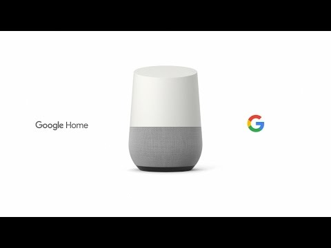
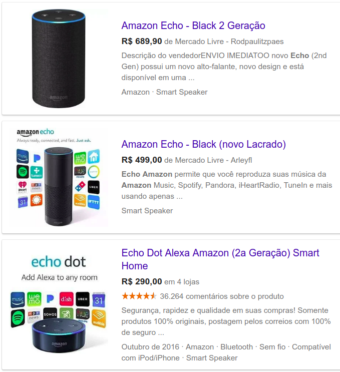
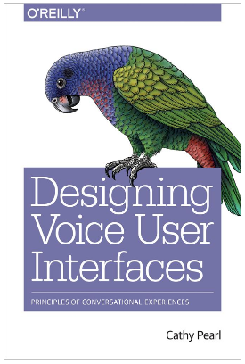

Siglas
- voice user interface (VUI)
- automated speech recognition (ASR)
- natural-language understanding (NLU)
Requisitos para o diálogo
Para um diálogo ser estabelecido nós precisamos de duas tecnologias:
- reconhecimento de voz (automated speech recognition - ASR)
- entendimento da linguagem natural (natural-language understanding - NLU)
Cooreferencia
Internet das coisas
Dispostivo: Google Home

Alexa
Alexa Development 101 - Full Amazon Echo tutorial course in one video!
- Alexa / serviços
- Alexa skills / alexa voice service
- Podemos criar os skills e vendê-lo.
- Podemos criar componentes que são compatíveis com o alexa
- Dispositivos: echo, outro dispostivios
Como criar um skill na Amazon
Dispostivo: Amazon Echo

- O git é uma ferramenta de controle de versão.
- O git funciona utilizando repositórios de arquivos descentralizados (existem vários repositórios)
- O Github é uma empresa que vende hospedagens para repositórios on-line e oferece repositórios gratuítos para projetos de código aberto.
1. Criar um repositório para guardar arquivos para um projeto de uma disciplina
Nesta atividade você irá criar um repositório para hospedar os arquivos de um projeto
- Escolham um projeto de disciplina (se não tiver um projeto, invente um).
- Vá ao github e crie um repositório para o projeto escolhido. (Lembre-se de marcar que deseja criar um arquivo README)
- Depois que o projeto for criado, edite o arquivo
README.md e adicione um parágrafo explicando o projeto.
Sei lá.
